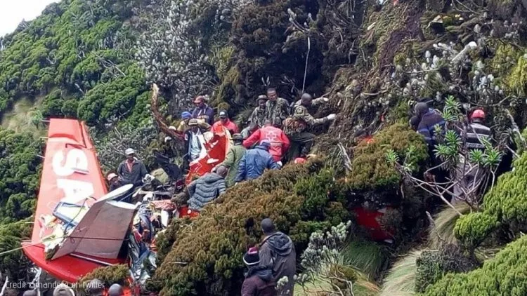
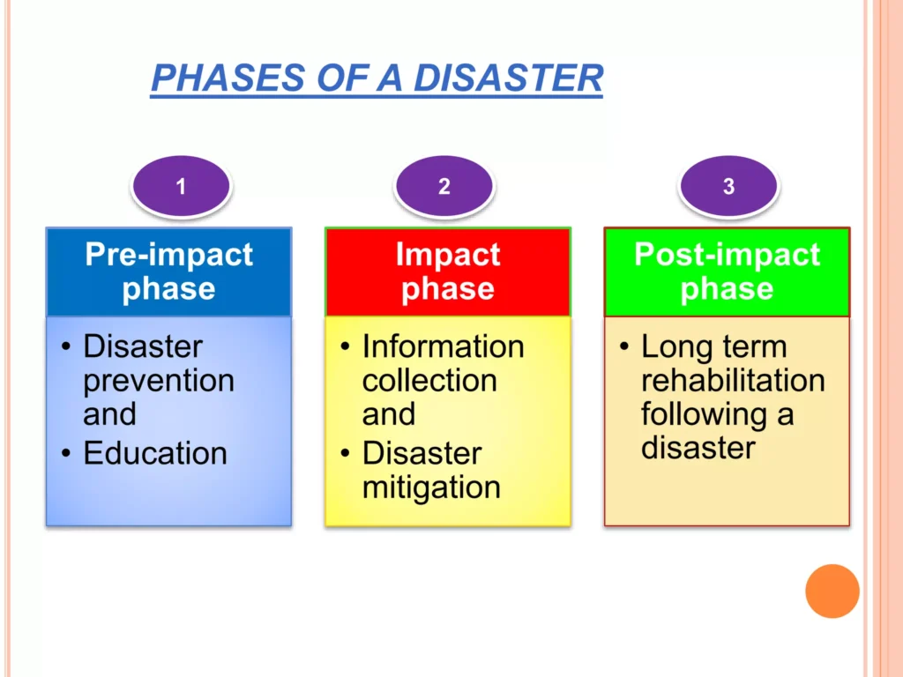
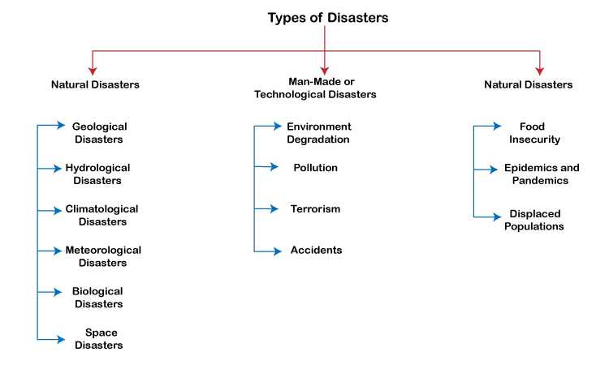
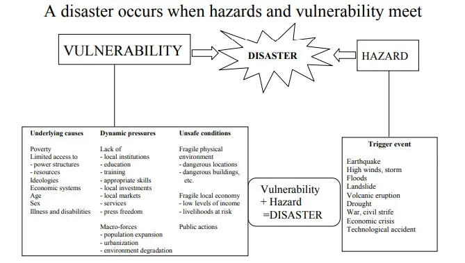

Expanded Nursing Uganda Explanation
Requirements for disaster preparedness. should be understood beyond a short definition. Link the concept to patient history, focused assessment, common risks, nursing priorities, documentation and evaluation of outcomes.
01 Stages of disaster management
Disaster Management encompasses a comprehensive range of activities, programs, and measures that can be undertaken before, during, and after a disaster.
Its primary purpose is to prevent a disaster, minimize its impact, and facilitate recovery from the resulting losses.
Disaster Management is an ongoing and integrated process that involves planning and implementing measures across various sectors and disciplines. Its aim is to minimize the loss of life, disability, suffering, and damage experienced by disaster victims.
02 Objectives of Disaster Management
- Risk Prevention and Reduction : Efforts to prevent and decrease the likelihood of hazards occurring in the first place.
- Hazard Mitigation : Actions taken to lessen the effects of hazards on vulnerable populations and infrastructure.
- Emergency Preparedness : Preparing for potential disasters by developing response plans, training personnel, and stockpiling essential resources.
- Effective and Rapid Response : Swift and efficient response to a disaster to mitigate its impact and provide immediate assistance to affected individuals.
- Recovery and Rehabilitation: Implementation of programs and initiatives aimed at restoring the affected community and supporting the physical, emotional, and socio-economic recovery of disaster victims.
- Pre-Disaster Stage (Before a disaster) : During this stage, proactive measures are taken to minimize human and property losses caused by potential hazards. It involves various actions such as conducting awareness campaigns, strengthening weak structures, developing disaster management plans at the household and community level, and implementing mitigation and preparedness activities.
- Disaster Occurrence Stage (During a disaster) : This stage focuses on addressing the immediate needs of the affected population and minimizing their suffering. It entails carrying out emergency response activities, ensuring the provision of essential services, and coordinating rescue and relief efforts to provide timely assistance and support to those impacted by the disaster.
- Post-Disaster Stage (After a disaster) : Following a disaster, the emphasis shifts towards initiating recovery and rehabilitation measures for affected communities. Response and recovery activities are undertaken to restore essential services, rebuild infrastructure, provide medical aid, facilitate livelihood restoration, and support the affected population in achieving early recovery and long-term resilience.
Key personnel in disaster management
- Category Key Personnel
- Health Care Community – Hospitals
- – Medical Examiners
- – Mental Health Professionals
- – Pharmacies
- – Public Health Departments
- – Rescue Personnel
- Non-Health Care Community – Firefighters
- – Municipal or Government Officials
- – Media
- – Medical Supply Manufacturers
- – Police
- – Morticians
- – Funeral Directors
03 **Disaster Management Cycle**
Disaster management cycle has four phases
These include the following
- Phase 1 – Mitigation
- Phase 2 – Preparedness
- Phase 3 – Response
- Phase 4 – Recovery
Introduction:
Mitigation refers to sustained actions that reduce or eliminate long-term risk to people and property from natural hazards and their effects. It involves efforts at the federal, state, local, and individual levels to lessen the impact of disasters on families, homes, communities, and the economy.
Goal :
The goal of mitigation activities is to eliminate or reduce the probability of disaster occurrence or mitigate the effects of unavoidable disasters.
There are two types of mitigation activities:
- Structural Mitigation : This type involves constructing projects to reduce economic and social impacts.
- Non-structural Mitigation: These are policies aimed at raising awareness of hazards and encouraging developments to lessen disaster impact.
- Through non-structural mitigation, businesses and the public can be educated to reduce loss or injury.
- At home, mitigation activities include strengthening vulnerable areas such as rooftops, exterior doors, and windows, as well as building a safe room.
- Promoting sound land use planning based on known hazards.
- Relocating or elevating structures out of floodplains.
- Installing hurricane straps to securely attach a structure’s roof to its walls and foundation.
- Buying flood insurance to protect belongings.
- Developing, adopting, and enforcing effective building codes and standards.
- Engineering roads and bridges to withstand earthquakes.
- Using fire-retardant materials in new construction.
These kits provide essential supplies for everyday life in the event of a disaster. It is important to prepare these kits in advance, especially in places where people may not have ready access to necessary supplies. The following kits are suggested:
- Health Kit: Items : 1 hand towel, 1 washcloth, bath-size bar of soap in a wrapper, I toothbrush in a sealed package, I large tube of toothpaste, 6 adhesive bandages (such as Band-aids). Wrap the brand new items in the new hand towel, tie it with string or yarn, and place inside a sealed, one-liter plastic bag with a zipper closure. hair comb, regular size (not pocket) nail file or nail clipper.
- Packaging : Wrap new items in the hand towel, tie with string or yarn, and place inside a sealed, one-liter plastic bag with a zipper closure.
- First-aid Medicine Kit: Items : Sterile gauze pads; (4 x 4) 50 Pads, Adhesive tapes 6 Rolls, 1/2” or I” x 10 years or more, Triple antibiotic topical ointment: 4 tubes (1 os tubes) Example: Neosporin ointment, Aspirin: 325 mg (5 g) tablets, Ferrous sulfate tablets 500 tablets of 325 mg, Antacid, for treatment of upset stomach/heartburn, Mebendazole or Thiabendazole, ftr intestinal worm infection, Sulfamethoxazole/Trimethoprim, antibacterial for adults and children, Tetmosol soap, for treatment of scabies for adults and children, Oral rehydration salt, to combat dehydration for adults and children, Promethazine, for treatment of nausea, Chlorhexidine, antiseptic for adults and children, Rolled bandages, for first aid applications
- School Kit: Items : 1 blunt scissors, 2 pads of 8 ½” x 11” ruled paper, 1 30 centimeter ruler pencil sharpener, 6 unsharpened pencils with erasers, 1 eraser, 2 ½”, 12 sheets of construction paper, 1 box of 8 crayons, Prepare a 12” x 14” (finished size) cloth bag with handles and closure (Velcro, snap, or button) and place the items in the bag.
- Packaging: Prepare a cloth bag with handles and closure (Velcro, snap, or button) and place the items inside.
- Kit for Kids: Items : 6 cloth diapers, 2 shirts, 2 baby washcloths, 2 gowns, 2 diaper pins, 1 sweater, 2 receiving blankets, Bundle the items inside one of the receiving blankets and secure it with diaper pins.
- Packaging: Bundle the items inside one of the receiving blankets and secure it with diaper pins.
- Domestic Kit: Items : 2 flat double bed sheets, 2 pillow cases, 2 pillows, Sheets, Towels, Blankets, Pillows
- Sewing Kit: Items: 3 yards of cotton or cotton-blend solid-color or print fabric (there must be 3 uncut yards of fabric or the kit is not usable),1 pair of sewing scissors, 1 package of needles, 1 spool of thread, 6 matching buttons
- Cleaning Utilities: Items: 5-gallon bucket with resealable lid, bleach, scouring pads, scrub brush, cleaning towels, sponges, laundry detergent, household cleaner, disinfectant dish soap, clothespins, clothesline, dust masks, latex gloves, work gloves, trash bags, insect repellent, air freshener.
Introduction :
Disaster preparedness encompasses a range of measures taken by governments, organizations, communities, and individuals to effectively respond to and cope with the aftermath of disasters, whether caused by natural hazards or human-made events.
Goal :
The goal of preparedness activities is to achieve a satisfactory level of readiness to save lives and protect property during emergency situations.
- Implementation and Operation: Establishing systems and protocols for effective disaster response and recovery.
- Ensuring the availability of necessary resources and equipment.
- Coordinating response efforts among various agencies and organizations.
- Early Warning Systems: Developing and implementing systems to provide timely warnings and alerts.
- Ensuring that people can react appropriately when early warnings are issued.
- Preparedness Plans: Creating comprehensive plans that outline specific actions to be taken before, during, and after disasters.
- Identifying roles and responsibilities of different stakeholders.
- Regularly reviewing and updating plans based on changing circumstances.
- Emergency Exercises: Conducting drills and exercises to test the effectiveness of response plans.
- Simulating disaster scenarios to train personnel and enhance coordination.
- Identifying areas for improvement and refining response strategies.
- Emergency Communication Systems: Establishing robust communication networks for disseminating critical information.
- Utilizing various channels, such as radio, television, and social media, to reach the public.
- Facilitating communication between response agencies and the affected population.
- Public Education: Developing and implementing educational programs to raise awareness about disaster risks and preparedness measures.
- Promoting knowledge and skills needed to respond effectively during emergencies.
- Empowering individuals and communities to take proactive measures to protect themselves.
- Risk Evaluation: Assessing the susceptibility of a region or country to different types of disasters.
- Understanding the specific hazards and vulnerabilities to develop targeted preparedness strategies.
- Standards and Regulations: Establishing appropriate standards and regulations for infrastructure and construction.
- Ensuring compliance with building codes and land-use practices to mitigate disaster risks.
- Coordination and Response Mechanisms: Organizing effective coordination structures among government agencies, NGOs, and community groups.
- Streamlining communication and cooperation to facilitate rapid response and resource mobilization.
- Resource Availability: Allocating sufficient financial and logistical resources to enhance preparedness efforts.
- Ensuring resources can be readily accessed and mobilized in times of disaster.
- Public Education Programs: Developing educational initiatives to inform the public about hazards, risks, and preparedness measures.
- Encouraging individuals to take personal responsibility for their safety and the safety of others.
- Disaster Simulation Exercises: Conducting regular drills and exercises to test response mechanisms and evaluate their effectiveness.
- Simulating realistic disaster scenarios to identify strengths, weaknesses, and areas for improvement.
- Realistic and Simple: The plan should be practical, easy to understand, and implementable in real-world scenarios.
- Definite and Target-Oriented : The plan should have clear objectives and specific targets for preparedness activities.
- Vividly Descriptive and Continuous: Activities should be clearly described and ongoing to maintain preparedness over time.
- Specified Responsibilities and Duties: Roles and responsibilities of different individuals and organizations should be clearly defined.
- Aligned with Community Ideals and Aspirations: The plan should reflect the values, goals, and aspirations of the community it serves.
A comprehensive disaster preparedness plan includes:
- Early Warning Systems: Designing and implementing effective warning systems to provide early signals.
- Evacuation and Victim Support: Planning for safe evacuation and relocation of affected individuals.
- Establishing temporary shelters for displaced populations.
- Stockpiling Essential Supplies: Storing food, water, and other essential resources in preparation for disaster events.
- Disaster Drills and Exercises: Conducting practice drills to train individuals and organizations on response and evacuation procedures.
- Action Plans for Response and Recovery: Developing plans for post-impact response and recovery efforts.
- Tracking threats and intervening early to prevent or minimize the impact of disasters.
- Personal Protective Equipment: Ensuring the availability of necessary protective gear for individuals to safeguard themselves during emergencies.
- Environmental Controls: Implementing environmental protection measures to prevent and mitigate disasters.
- Early Warning Systems: Establishing mechanisms to detect early warning signs of impending disasters using appropriate technology.
- Knowledge of Citywide Disaster Management Plan: Understanding and familiarizing themselves with the disaster management plan specific to their area.
- Plan Updates: Updating the disaster plan as necessary to ensure its relevance and effectiveness.
- Educational Material Development: Creating educational materials tailored to the specific disaster risks in the community.
- Disaster Drills and Collaboration: Organizing drills and exercises in collaboration with government and non-governmental organizations.
- Records of Vulnerable Population: Maintaining updated records of vulnerable populations within the community for targeted assistance.
- Awareness of Community Resources: Understanding available community resources and promoting cooperation during disasters.
- Mitigation of Man-made Disasters: Promoting the enforcement of building codes and proper land and water management practices to prevent man-made disasters.
- Education for Disaster-prone Areas: Providing public education to residents of disaster-prone areas to mitigate the impact of unavoidable disasters.
- Instructions on Safety Precautions: Providing guidance on safety precautions, emergency supply storage, and basic first aid to prepare the public for potential injuries.
- Public Communication Systems: Ensuring effective communication channels, such as radio and television, for disseminating information during disasters.
- Early Warning Systems: Utilizing early warning systems to alert the public about immediate dangers and reduce the impact of disasters.
- Immediate Hazard Mitigation: Taking swift action to address unsafe conditions after a disaster to prevent further casualties, such as contamination or structural instability.
Note : Disaster Preparedness and Disaster Mitigation are interconnected. Preparedness includes mitigation measures to ensure that existing infrastructure can withstand disasters’ forces.
- Personal Preparedness: Nurses involved in disaster relief efforts should maintain good physical and psychological health.
- Certification in first aid and cardiopulmonary resuscitation is essential.
- Professional Preparedness: Establishing a disaster management team comprising nurses, physicians, social workers, and other professionals.
- Familiarizing themselves with disaster plans at their workplace and community.
- Participating in disaster drills and exercises.
- Developing and providing educational materials specific to disaster preparedness.
- Community Involvement: Keeping records of vulnerable populations within the community.
- Understanding available community resources and promoting collaboration during disasters.
- Public Education and Safety: Instructing the public on safety precautions, emergency supply storage, and basic first aid.
- Collaborating with media to disseminate information during disasters.
- Utilizing communication systems for effective public outreach.
- Early Warning Systems and Hazard Mitigation: Contributing to the establishment and utilization of early warning systems.
- Participating in immediate hazard mitigation efforts to prevent further harm.
Introduction
The disaster response phase is focused on providing immediate assistance to affected populations to preserve life, improve health, and boost morale. While this stage primarily addresses short-term needs, the transition to the recovery stage may overlap as certain response actions extend into that phase.
According to the American Red Cross (2002), there are eight fundamental principles that should guide rescue teams and stakeholders in disaster response:
- Prevent the occurrence of disasters whenever possible.
- Minimize casualties if the disaster cannot be averted.
- Prevent further casualties after the initial impact.
- Conduct rapid and minimal-damage rescues.
- Provide first aid to victims using protected facilities.
- Assess the well-being of medical staff as they are essential caregivers.
- Deliver definitive medical care on-site and facilitate quick referrals.
- Support the rehabilitation of severely injured victims.
The aims of disaster response include:
- Saving and protecting human life.
- Relieving suffering.
- Containing and mitigating the emergency to limit its escalation and spread.
- Providing warnings, advice, and information to the public and businesses.
- Protecting the health and safety of responding personnel.
- Safeguarding the environment.
- Protecting property to the extent reasonably possible.
- Maintaining or restoring critical activities.
- Sustaining normal services at an appropriate level.
- Promoting and facilitating self-help within affected communities.
- Assisting investigations and inquiries through scene preservation and effective records management.
- Facilitating community recovery, including humanitarian assistance, economic revival, infrastructure restoration, and environmental rehabilitation.
- Evaluating the response and recovery efforts.
- Identifying and implementing lessons learned.
Coordinated multi-agency response is crucial in reducing the impact and long-term consequences of a disaster. Relief activities during the response phase include:
- Rescue operations.
- Relocation of affected individuals.
- Provision of food and water.
- Emergency healthcare services.
- Prevention of diseases and disabilities.
- Repair of vital services such as telecommunications and transport.
- Provision of temporary shelter.
- Providing Accurate Information : Nurses working as part of assessment teams must provide precise information to relief managers for efficient rescue and recovery operations.
- Assessment Reporting : Assessment reports should include information on the geographical extent of the disaster’s impact, the population at risk, presence of concurrent hazards, injuries and fatalities, availability of shelters, sanitation conditions, and the status of healthcare infrastructure.
- Gathering Information : Nurses gather information through interviews, observations, individual physical examinations, surveys (sample and special health assessments), and record-keeping (census, vital statistics, disease reporting).
- Shelter Management : Nurses, with their expertise in health promotion, disease prevention, and emotional support, are valuable team members in managing shelters alongside voluntary health agencies.
- Dealing with Stress : When working with stressed victims, nurses should: Listen attentively to victims as they express their feelings related to the disaster.
- Encourage appropriate sharing of feelings among victims.
- Assist victims in making decisions.
- Involve teenagers in delegated tasks to combat boredom.
- Provide basic necessities such as food and water.
- Maintain privacy and dignity for victims.
- Refer patients to counselors, psychologists, psychiatrists, and social workers as needed.
- Provide medical and nursing aid, first aid, and record-keeping.
- Ensure communication, transportation, and a safe environment.
Introduction
The primary objective of the disaster management process in the recovery phase is to engage all agencies and resources to restore the economic and social life of the community.
This must be done because
- There is continuous threat of communicable diseases due to inadequate water supply and crowded living condition nurses must remain vigilant in teaching proper hygiene and making sure immunization records up to-date.
- Acute and chronic illnesses can become worse by prolonged effect of disasters. Psychological stress of clean up and moving can cause feeling of severe hopelessness, depression and grief. Referral services of mental health professional should be continued as long as peed exists.
Goal: To assist people in restoring their lives and infrastructure as quickly as possible.
- Relief Phase: This phase immediately follows the disaster and aims to meet the immediate basic needs of affected individuals, such as food, clothing, and security. It is a period when agencies actively participate and promote individual recovery by providing necessary resources.
- Rehabilitation : The rehabilitation phase focuses on restoring essential services necessary for affected individuals. This may include providing loans to the community to start businesses and offering social support to the vulnerable population who have lost loved ones or have become disabled.
- Reconstruction : The reconstruction phase involves implementing a new phase of community organization and reducing vulnerability. This may include administrative reforms, changes in livelihood systems, and enhancing community participation in planning and administration. It primarily focuses on replacing damaged properties. The role of a midwife in this phase includes educating the community on environmental sanitation, maintaining immunization records, and making appropriate referrals.
Recovery activities can be classified as:
- Short-Term Recovery Activities : These activities are aimed at immediate restoration and stabilization of systems and services.
- Long-Term Recovery Activities: These activities focus on the sustainable recovery and development of the affected areas until all systems return to normal or better.
- Building temporary housing.
- Providing public information.
- Educating the public about health and safety measures.
- Offering counseling programs for affected individuals.
- Reconstruction of infrastructure.
- Conducting economic impact studies.
- Ensuring a smooth transition from recovery to long-term sustainable development.
By actively engaging in these recovery activities, nurses contribute significantly to the restoration and resilience of the community
04 Community Participation in Disaster Management
Introduction
Community participation in disaster management refers to the process where individuals, families, and communities take responsibility for promoting their own health and welfare during times of crisis. The Community Health Nurse (CHN) plays a crucial role in connecting professional experts in disaster management with the community. It involves community members taking the initiative to develop and sustain their own disaster management plans, utilizing locally available resources for planning, implementing, monitoring, and evaluating programs.
- Increasing public awareness and support for disaster management at the local level.
- Enhancing the capacity of diverse communities to deal with disasters effectively.
- Allocating resources for disaster mitigation, preparedness, prevention, response, and recovery.
- Collaborating with community members to develop the disaster management plan.
- Utilizing the knowledge of community members regarding the occurrence, frequency, severity, and timing of natural disasters.
- Creating awareness among community members and agencies about preparedness.
- Ownership of disaster management programs by the community, as they actively contribute their energy and resources for implementation.
- Facilitating relationships between the community and other stakeholders willing to provide assistance.
- Developing preparedness plans that align with local values through community participation in planning.
- Promoting family and community disaster preparedness, including developing emergency preparedness plans to address safety hazards at home and in the community.
It encompasses the following areas:
- Setting up first aid posts.
- Evacuating casualties.
- Promoting basic hygiene and sanitation practices.
- Implementing safety measures.
- Maintaining law and order.
- Providing shelter.
- Streamlining rescue operations.
- Emphasizing the significance of traffic control and communication.
- Utilizing fire services effectively.
- Educating about radiation hazards and preventive measures.
- Encouraging improvisation during emergencies.
- Focusing on preventing future disasters.
- Facilitating grant aid.
- Supporting rehabilitation efforts.
Nurses play a vital role in ensuring community participation by assisting the community in:
- Systematically identifying problems.
- Soliciting innovative ideas and solutions.
- Creating a sense of belonging among community members.
- Facilitating the better utilization of resources.
- Providing faster communication channels.
- Allowing participatory decision-making at the local level.
- Ensuring effective and timely monitoring.
- Involving individuals from all social classes within the local community.
- Individual and Community-Level Actions : Many actions required for disaster management and preparedness are at the individual or community level. Community participation ensures that these actions are effectively carried out, leading to a more comprehensive and coordinated response.
- Utilization of Limited Resources : The state has limited resources, and in times of disaster, these resources may not be sufficient to address all the needs. Active community participation becomes essential to supplement and complement the available resources, maximizing their impact.
- Promotion of Self-Sufficiency : Engaging in community participation motivates individuals to become self-sufficient and reduces their dependence on external assistance. By taking an active role in disaster management, communities can develop their capacity to handle future challenges more effectively.
- Ongoing Progress Review: Community participation facilitates regular review of the progress of disaster management activities. This continuous evaluation helps guide the program in a definitive direction, ensuring that the efforts remain focused and aligned with the evolving needs of the community.
- Effective Communication and Problem Identification: Community participation enables the implementing agency to interact and exchange views with community members. This interaction provides a platform to identify and understand the specific problems faced by the community during a disaster. It also allows for the provision of necessary assistance tailored to their unique needs and circumstances.
- Search and Rescue : Swift and systematic search and rescue operations to locate and extract individuals who are trapped or in immediate danger.
- Evacuation : Safely relocating individuals from areas at high risk or those affected by the disaster to designated evacuation centers or safer locations.
- Victim Care : Providing immediate medical attention, administering first aid, identifying casualties, arranging medical evacuations, hospitalization, and managing the proper disposal of deceased individuals.
- Shelter : Establishing temporary shelters for displaced individuals, ensuring safe and adequate living conditions. Urgent repairs to damaged houses may also be necessary.
- Food Distribution : Assessing the damage to crops and food stocks, estimating available food reserves, and distributing food and fodder to affected communities.
- Communication : Clearing and restoring key communication channels such as roads, rail systems, airfields, and communication networks to ensure effective coordination and information dissemination.
- Water and Power Supplies : Restoring and maintaining access to clean water sources and ensuring the availability of power supply to affected areas.
- Temporary Subsistence Supplies : Providing essential items like clothing, cooking utensils, and other immediate necessities to meet the basic needs of affected individuals.
- Health and Sanitation: Establishing healthcare facilities, ensuring access to necessary medical supplies, implementing sanitation measures to prevent the outbreak of diseases in overcrowded and unsanitary conditions.
- Public Information : Disseminating accurate and timely information to the public about safety measures, available assistance, and resources during the disaster.
- Security : Ensuring the safety and security of affected communities by maintaining law and order, preventing looting or other criminal activities.
- Quick Damage Assessment: Conducting rapid assessments to determine the extent of damage to infrastructure, buildings, and key services.
- Needs Assessment: Evaluating the ongoing needs of the community in terms of housing, healthcare, livelihoods, and other essential services.
- House Repairs : Facilitating the repair and rehabilitation of damaged houses to provide safe and habitable living conditions for affected individuals.
- Reconstruction : Planning and implementing long-term reconstruction efforts to rebuild infrastructure, public facilities, and community assets that were destroyed or severely damaged.
- Economic Rehabilitation: Supporting the recovery and revitalization of local economies through job creation, livelihood restoration, and financial assistance to affected businesses.
- Social Rehabilitation : Providing psychosocial support, counseling services, and community programs to help individuals cope with trauma and rebuild social support networks.
- Compensation and Insurance: Ensuring fair compensation for losses suffered by individuals and communities, including insurance claims and assistance programs.
- Conservation of Produce : Implementing measures to preserve and utilize damaged crops or produce to prevent further loss and support food security.
- Immediate Agricultural Rehabilitation : Undertaking initiatives to restore agricultural activities, such as providing seeds, fertilizers, and tools, and assisting farmers in resuming cultivation.
- Strengthening Response Aspects : Enhancing and improving all aspects of disaster response, including rescue operations, medical services, education, shelter provision, communication systems, water and power supplies, temporary aid distribution, health and sanitation, public information, security, and construction requirements.
- Strengthening of Counter Disaster Resources : Reinforcing and developing capacities in various sectors such as policy directions, police, agriculture, ambulance services, broadcasting, civil aviation, education, electricity and water supplies, environment, fire services, finance, fisheries, forestry, irrigation, labor, lands and survey, meteorology, public works, social welfare, and transport.
- Strengthening of Warning Systems : Upgrading early warning systems, improving disaster monitoring, and enhancing communication channels to ensure timely and effective dissemination of alerts and advisories.
- Public Awareness : Conducting awareness campaigns and community education programs to enhance disaster preparedness, risk reduction, and community resilience.
05 Nursing Uganda Clinical Lens
Use The stages of disaster management. as a practical nursing topic, not only a memorized definition. Translate theory into safe decisions, accountability, communication and service improvement.
- What to understand first: define the stages of disaster management., identify the normal or expected pattern, then explain what changes when the patient is unwell.
- Why it matters in care: the nurse must recognize risk early, explain findings clearly, document accurately and know when to escalate.
- How to revise it: connect each point to assessment, nursing diagnosis or care problem, intervention, rationale and evaluation.
06 Assessment Guide
- The problem, stakeholders, available resources, policy requirements and ethical issues.
- Risks to patients, staff, confidentiality, quality, costs and continuity.
- Documentation, reporting lines, supervision and evaluation measures.
07 Nursing Priorities, Rationales and Outcomes
- Use evidence, policy and professional standards to guide action.
- Communicate clearly, document decisions and protect confidentiality.
- Evaluate whether the action improves safety, learning or service delivery.
The rationale for these priorities is patient safety: nursing actions should prevent deterioration, reduce discomfort, support recovery and create clear evidence for the next caregiver.
- Expected outcome: The plan is documented, realistic, ethical and improves patient care or learning outcomes.
08 Patient Teaching and Revision Check
- Explain the stages of disaster management. in simple language the patient or caregiver can repeat back.
- Teach warning signs, medicine or follow-up instructions, hygiene or lifestyle points where relevant.
- For exams, prepare a short answer using: definition, causes or risk factors, signs, assessment, management, complications and prevention.
- For ward practice, document baseline findings, actions taken, patient response and the plan for review.
Illustrations and Diagrams (20)






12 more diagrams available, open the lesson for full illustrations.
Related Video Lectures
Watch nursing lecture videos on YouTube for this topic. Opens in a new tab.
Watch on YouTubeExternal link: YouTube may use its own cookies and terms. Nursing Uganda is not affiliated with YouTube.